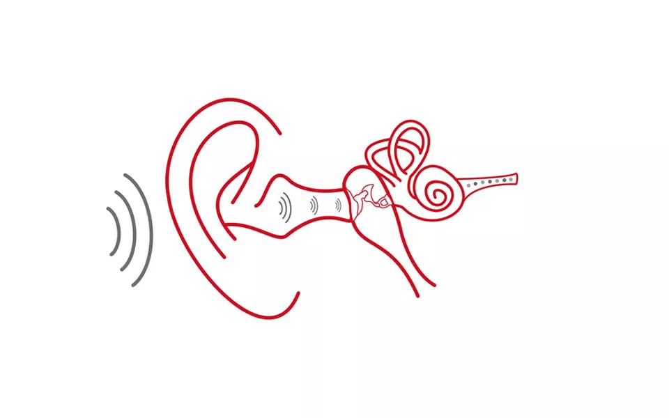

¡Bienvenidos Estudiantes!
Si quieren ver más temas relacionados a la física pueden ver el temario accediendo nuevamente al apartado superior y seleccionando el tema de su elección.
La audición
es el proceso de percibir el sonido. La pérdida auditiva puede restringir la comunicación y la interacción social con otras personas, lo que puede afectar la calidad de vida.
¿Cómo se propaga el sonido?
Los sonidos se propagan por el aire en forma de ondas. Estas ondas son conducidas por el oído externo hacia el oído medio.
En éste el sonido es amplificado por la acción del tímpano y la cadena de huesesillos (martillo, yunque y estribo) que funcionan como un sistema de palancas, amplificando varias veces el sonido percibido.
Luego la energía del sonido pasa al oído interno donde es transducida y codificada por el órgano de Corti (órgano sensorial) y enviada al nervio auditivo.
La vía auditiva transmite los impulsos eléctricos hacia la corteza cerebral (lóbulo temporal) donde la señal es decodificada y se convierte en un estímulo acústico con significado (ruidos, palabras, etc.)

¿Qué es la Hipoacusia?
La hipoacusia es definida como la disminución de la percepción auditiva. Dependiendo de su origen y tiempo de aparición, puede ser congénita (el niño nace con esta afección que puede tener múltiples etiologías) ó adquirida (durante la vida). Dependiendo de la zona del oído que este afectada, se habla de hipoacusias de conducción (oído externo y/o medio, HA mixtas y neurosensoriales (oído interno). Según su grado, la hipoacusia está clasificada en leve, moderada, severa y profunda.
En la hipoacusia leve sólo surgen problemas de audición con voz baja y ambiente ruidoso. En las moderadas se aprecian dificultades con la voz normal (en niños pre locutivos existen problemas en la adquisición del lenguaje y en la producción de sonidos). En las severas sólo se oye cuando se grita o se usa amplificación (audífono) (en niños no se desarrolla lenguaje sin ayuda protésica y de profesionales). En las profundas la comprensión es prácticamente nula, incluso con amplificación (en los niños no se produce un desarrollo espontáneo del lenguaje).
La ausencia total de audición es llamada anacusia o cofosis. Si es bilateral, el niño puede llegar a ser candidato a implante coclear.
En los niños, es de alta importancia la edad a la que aparece la hipoacusia. Así se hace distinción entre hipoacusias pre locutivas (antes de la adquisición del lenguaje), peri locutivas (durante) y post locutivas (ya adquirido el lenguaje). Esta división temporal, acompañada del grado en que se presente la hipoacusia, serán determinantes para el desarrollo del lenguaje en el niño. Hoy en día existe en varios hospitales de Chile, planes de Detección Temprana de la Hipoacusia.
En el tratamiento de niños, además de una detección temprana e implementación con prótesis auditiva (audífono) o prótesis (implantes), es de suma importancia el trabajo interdisciplinario en la habilitación o rehabilitación del niño para que pueda adquirir lenguaje, equipos formado por el pediatra, otorrino, audiólogo, fonoaudióloga, psicólogo etc.
Datos a recordar
Si el niño no produce sonidos o presenta un retraso en la adquisición de sus primeras palabras, no gira su cabeza ante sonidos ambientales o hay que llamarle la atención varias veces antes que se dé vuelta, es muy importante que sea evaluado por un especialista. En niños la detección e implementación precoz son claves para su adecuado desarrollo a todo nivel (cognitivo, social y psicológico) y en general son pruebas sencillas que pueden hacer que su desarrollo se produzca adecuadamente.
En pacientes adultos, para obtener el mejor diagnóstico, es indispensable que visite a su otorrino. Él le indicará los pasos a seguir y los tratamientos adecuados a su condición particular. Hay hipoacusias que pueden ser temporales, por ejemplo, de conducción por tapones de cerumen u otitis media y neurosensoriales por parálisis cocleo vestibular. En ambos casos el tratamiento precoz con el especialista es de vital importancia en su recuperación.
La condición más habitual en pacientes mayores de 65 años, es una pérdida paulatina de la audición, sobre todo de los tonos agudos, conocida como presbiacusia. Este tipo de pérdida es muy común y normal en adultos mayores. Debido a su carácter paulatino, puede pasar desapercibida en sus inicios. Los pacientes refieren dificultad para escuchar el timbre, o problemas para entender las conversaciones. Si Ud. o alguien de su familia presenta estos problemas, debe visitar a su otorrino para un estudio audiológico completo.